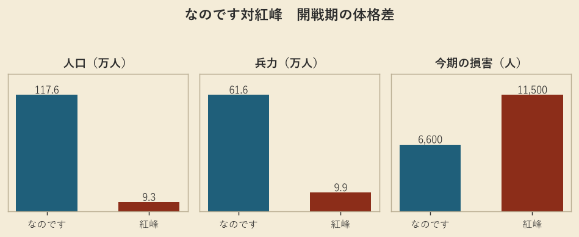
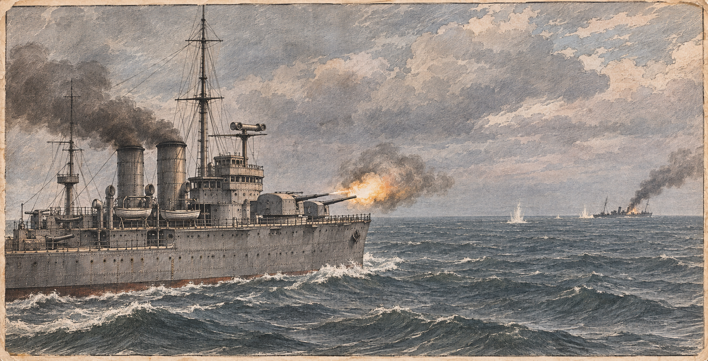

なのです、紅峰へ開戦 初日に駆逐艦を撃沈
海兵は首都のすぐ南まで進む
第169期の宣戦から五期 人口で十二倍超、兵力で六倍超の大国が小公国を攻め、巡洋艦二隻が開戦の初日に紅峰の駆逐艦を沈めた

【総合部】なのです主義人民共和国と紅峰公国の戦争が、第174期、ついに始まった。第169期になのですが宣戦を布告してから五期、予告どおりの開戦である。初日から海も陸も動いた。なのですの巡洋艦二隻が紅峰の駆逐艦を艦砲で撃沈し、海兵は紅峰の首都ローテンホルンのすぐ南まで進んだ。初日の損害は紅峰一万千五百人、なのです六千六百人。数で押すなのですが、紅峰の抵抗にも相応の血を払っている。
海の戦いは短かった。なのですの巡洋艦は紅峰の駆逐艦へ艦砲を浴びせ、一隻を沈めた。駆逐艦も魚雷を一発返し、なのですの巡洋艦の耐久を一段削ったが、反撃はそこまでだった。紅峰に残る艦艇は二隻から一隻に減った。撃沈数の順位では、なのですは累計二隻に達し、青海と並んで二位タイにつけた。人口百十七万、兵力六十一万の国が、開戦の初手で相手の海の足を断った形である。

教団、泰平と灰岩を同時に削る
狐っ娘の尻尾教団は、泰平天国との装甲戦で九千百人の損害を出しながら、灰岩王国の砲兵を砕いて歩兵二部隊を玉砕させた。人口は三十一万三千七百人に減ったが、兵力は五十五万八千五百人と三万三千人増えている。詳報は3面。
援軍艦を沈められた青海、カペレナへ講和を求める
カペレナ王国は黒潮自治国の兵站基地を奪い、黒潮の救援に向かう青海共和国の巡洋艦を撃沈した。艦には援軍が乗っており、二万千人が失われた。その直後、青海は講和を求めてカペレナへ停戦を打診し、黒潮も続いた。応じるかはカペレナ次第である。詳報は5面。